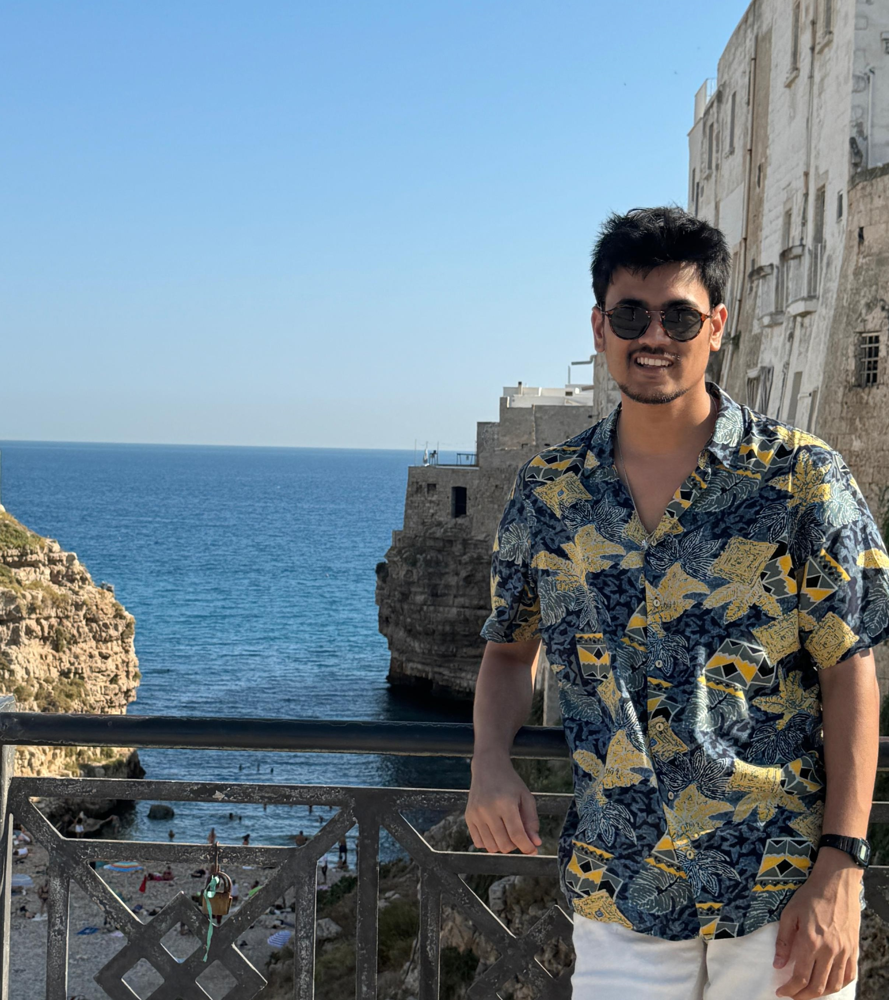

<div class="content">
    
	
	

	<p class="about_me">
		I am Saurabh Annadate, a final-year PhD student jointly affiliated with the
		 University of Urbino and Istituto Universitario di Studi Superiori (IUSS) Pavia. 
		I hold a master's degree in physics, with a minor in data science, from the 
		Indian Institute of Science Education and Research, Mohali, India.

		For my master's thesis, I worked on road transport and waste-burning emissions using the WRF-Chem model. 
		I enhanced the model setup by incorporating an improved road transport emission inventory to examine 
		the spatial variations in emissions of criteria air pollutants and volatile organic compounds across 
		northern India. 
		
		During my PhD, I focused on estimating greenhouse gas emissions using inverse modeling techniques,
		 with a particular emphasis on hydrofluorocarbons (HFCs) with 
		 high global warming potential, especially HFC-134a. 
		 I gained expertise in working with the Lagrangian dispersion model
		  and the Bayesian inverse modeling framework, Flexinvert. 
		  Additionally, I am involved in a Horizon Europe project called PARIS,
		   where I contribute to a work package on source attribution of 
		   European aerosols. I lead a deliverable aimed at estimating 
		   European black carbon emission fluxes using top-down methods. 
		   For this project, I am also developing an optimization algorithm 
		   for wet scavenging coefficients within the wet deposition
		    parameterization scheme of the FLEXPART model.

	</p>
    
</div>